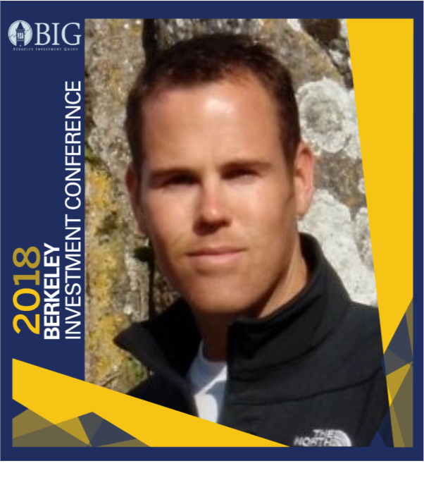
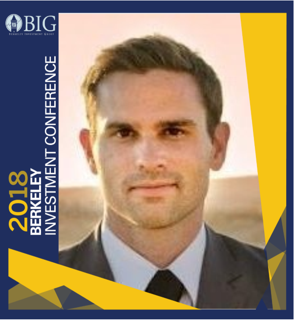

Ronan Kennedy
From serving as captain of the 101st Airborne Division to working as Vice President at Goldman Sachs, Ronan Kennedy has over a decade of experience in leadership positions in business, banking, and venture capital. Ronan currently works in venture capital at Microsoft Capital evaluating and investing in technologies that enable a mobile-first, cloud-first future spanning big data & analytics, business SaaS, cloud infrastructure, machine learning, productivity and security, among others. Ronan has an MBA from Haas Business School at the University of California: Berkeley and a BS in Engineering from the University of Washington.

Lance Matthews
Lance Matthews is an Associate at Deutsche Telekom Capital Partners where he works on company sourcing, investment analysis and diligence, and portfolio management. He joined DTCP from Touchdown Ventures, a SF based Corporate Venture firm. Prior to that, he spent time at Illuminate Ventures, a seed stage Enterprise Saas firm based in Oakland and at Twitter holding a position in the finance department. Lance holds an MBA from UC Berkeley’s Haas School of Business, a Master’s degree in History from the University of Glasgow, Scotland, and graduated Summa Cum Laude from CSU Fresno.
Chirag Odhav
Chirag Odhav is an Analyst working on the Portfolio Management team at White Oak Global Advisors. He previously worked at Bank of America Merrill Lynch in Equity Research covering the alternative energy and clean tech sector. Mr. Odhav received his B.A. from the University of California, Berkeley, and holds Series 7, 63, 86, and 87 FINRA Certifications. Chirag is also a Berkeley Investment Group alumnus and served as Fund Manager during the fall semester of his senior year at Cal.
.png)